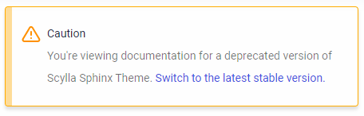

The toolchain adds by default the extension sphinx-multiversion for building self-hosted versioned documentation.
On this page, you will learn:
How to list new versions.
How to define a stable url.
How to disable multiversion support.
Caution
Maintaining multiple versions is expensive. Consider listing docs for new versions only if the release introduces relevant breaking changes reflected in the documentation. For example, it’s preferable to build docs for a major release rather than one release per patch.
The settings TAGS and BRANCHES in conf.py defines which versions are supported:
BRANCHES: List of git branches, separated by a comma. For example, BRANCHES= ['master'] builds docs for the master branch.
TAGS: List of git tags, separated by a comma. For example, TAGS = ['3.22.0', '3.21.0'] builds docs for the tags 3.22.0 and 3.21.0.
Tip
If you maintain a branch for each minor release (e.g. branch-3.22), we recommended building docs for the branch and not for tags. This will allow you to backport documentation changes if needed without having to update the tag reference.
The setting LATEST_VERSION in conf.py defines which branch or tag is considered the latest.
This is used to redirect users to the latest version of the docs automatically once they open the main project URL.
For example, if you want to build docs for the tags 3.22.0 and 3.21.0, master branch, the configuration file conf.py should look like this:
TAGS = ['3.22.0', '3.21.0']
BRANCHES = ['master']
LATEST_VERSION = '3.22.0'
The extension allows configuring additional settings. To know more about them, refer to sphinx-multiversion documentation.
We encourage every project to rename the latest version output directory to stable.
The purpose is to have default documentation links that do not change, which is beneficial for SEO purposes and referencing docs on other websites.
You can override the latest version output directory via the configuration file conf.py with the setting smv_rename_latest_version:
smv_latest_version = LATEST_VERSION # Use the branch/tag name
smv_rename_latest_version = 'stable' # Use the commit hash
Suppose you want to build docs for a version of the software you have not released yet (e.g. master).
In this case, you can mark the version as unstable in the conf.py file.
BRANCHES = ['master']
UNSTABLE_VERSIONS = ['master']
By doing so, the warning message that appears at the top of the page will change to:
Suppose you want to build docs for a version of the software you don’t support anymore.
In this case, you can mark the version as deprecated in the conf.py file.
TAGS = ['3.2.0']
DEPRECATED_VERSIONS = ['3.2.0']
By doing so, the warning message that appears at the top of the page will change to:
Set the settings smv_tag_whitelist and smv_branch_whitelist in conf.py to None.
smv_tag_whitelist = None smv_branch_whitelist = Noneor:
TAGS = [] smv_tag_whitelist = multiversion_regex_builder(TAGS) BRANCHES = [] smv_branch_whitelist = multiversion_regex_builder(BRANCHES)
On .github/workflows/pages.yml, change the command make multiversion for make dirhtml.